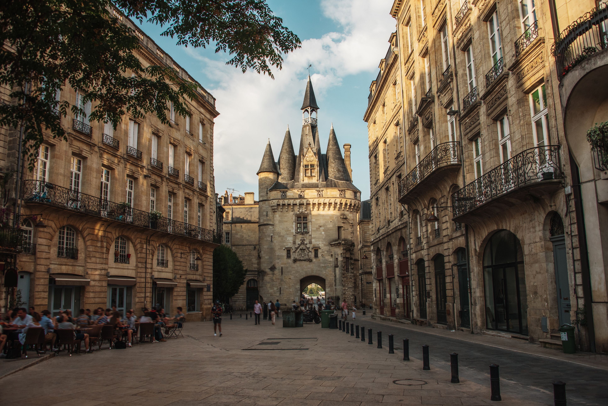
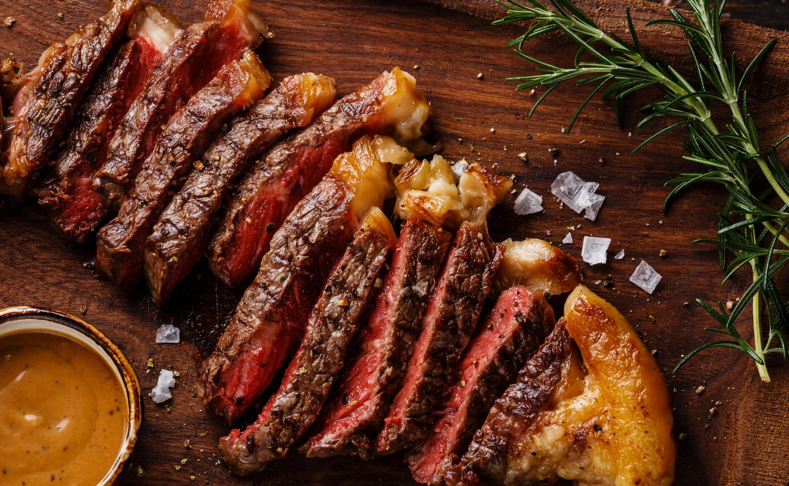
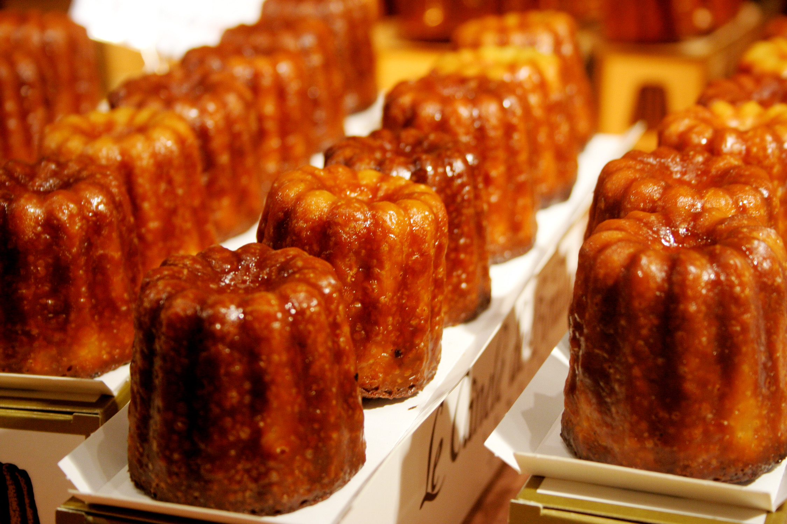
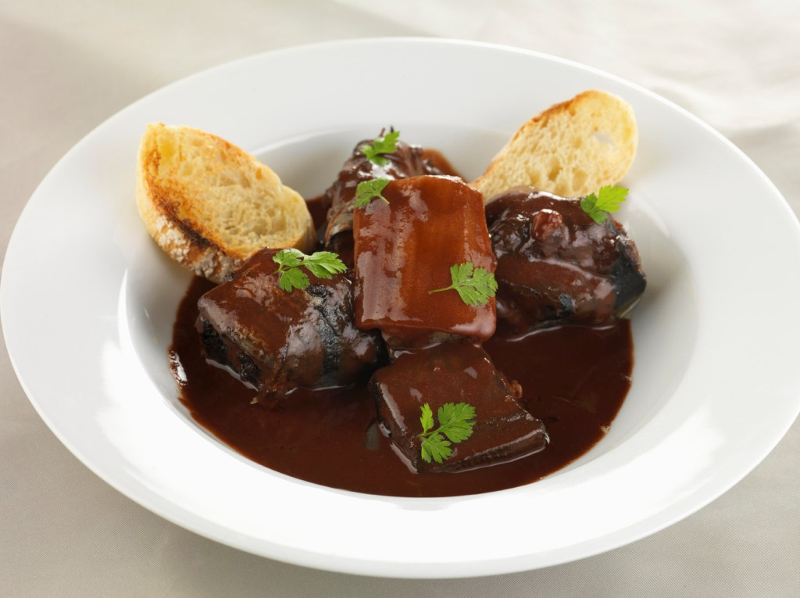
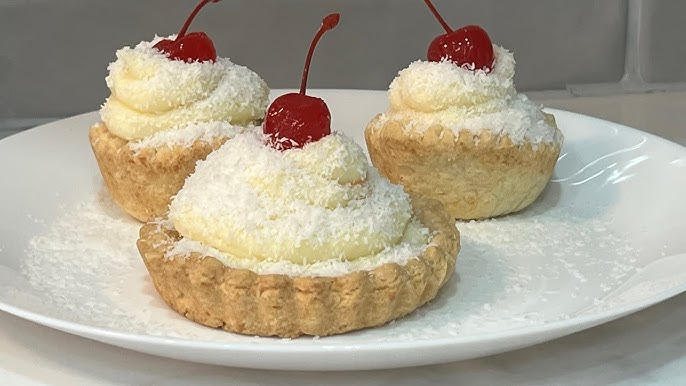

Bordeaux, situated along the banks of the Garonne River in southwest France, is one of the most elegant and culturally rich cities in the country. Famed the world over as the wine capital of France — and indeed the world — Bordeaux is surrounded by some of the planet's most prestigious wine estates and châteaux. Beyond its viticultural legacy, the city enchants visitors with its stunning 18th-century neoclassical architecture, a magnificent waterfront, vibrant gastronomy, and a well-preserved historic center recognized as a UNESCO World Heritage Site. Modern attractions like the Cité du Vin wine museum add a contemporary dimension to this timeless city.

Entrecôte à la bordelaise is a classic French dish featuring a seared ribeye steak topped with a rich reduction sauce made from Bordeaux red wine, shallots, butter, and often beef marrow. Traditionally, it is cooked over vine cuttings, delivering a savory, succulent flavor profile often accompanied by sautéed potatoes or fries.

A canelé is a small French pastry flavoured with rum and vanilla, having a soft and tender, custardy centre and a dark, thick, caramelized crust. It takes the form of a small, striated cylinder up to five centimetres in height, with a depression at the top.

Lamproie à la bordelaise is a traditional French stew from the Nouvelle-Aquitaine region featuring jawless lamprey fish slow-cooked in red wine (typically Bordeaux) with leeks, onions, herbs, and cured ham. The sauce is enriched and thickened with the fish's own blood, resulting in a rich, dark, and slightly "muddy" flavor profile.

The Puits d'amour is a French pastry with a hollow center. The center is usually stuffed with redcurrant jelly or raspberry jam; a later variation replaced the jam with vanilla pastry cream. The surface of the cake is sprinkled with confectioners' sugar or covered with caramel.